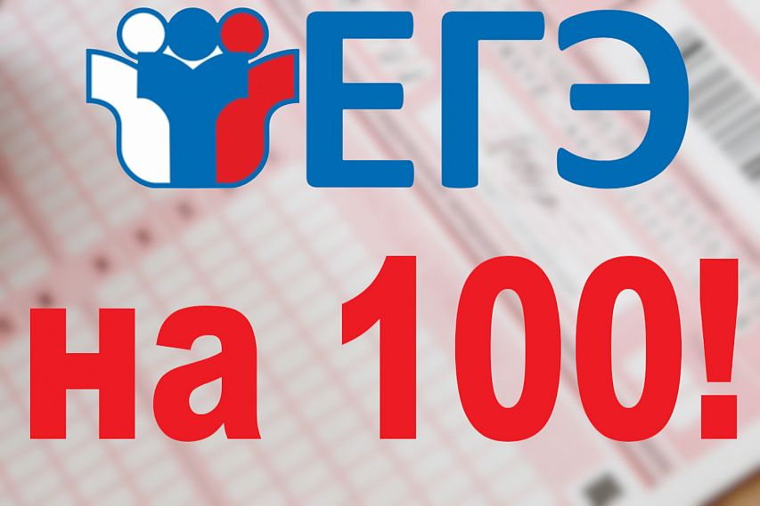

Как набрать 100 баллов на ЕГЭ
Чек-лист для воплощения мечты миллионов школьников

На главную страницу
Обратно на страницу новостей
Сдать ЕГЭ на 100 баллов — одно из самых актуальных желаний молодежи.
В 2020 году 8,5 тысяч учеников получили максимальный результат на экзаменах, но это только 1,2% от общего числа школьников.
Стать стобалльником сложно, но все-таки реально.
Трое выпускников, которые добились идеального результата на экзаменах по информатике, химии и русскому языку, объяснили, можно ли обойтись без везения на ЕГЭ,
стоит ли нанимать репетитора и как нужно готовиться к экзаменам, чтобы увидеть заветные 100 баллов.
Чтобы получить максимальный балл, не нужно к этому стремиться
Парадоксально, но стобалльники ЕГЭ советуют не ставить цель в 100 баллов,
поскольку безошибочно написать экзамен можно только в том случае, если школьник ни на что не надеется,
а, значит, чувствует себя спокойнее остальных выпускников, которые боятся допустить ошибку.
Лучше отказаться от репетиторов
Иронично, но каждый из стобалльников добился идеального результата именно по предметам, к которым он готовился без дополнительной помощи.
Анна Ильина, стобалльница ЕГЭ по химии:
-Все то, что школьники делают с репетитором, можно делать дома бесплатно.
Самое главное — изучить кодификатор и выстроить систему в голове вместо того, чтобы бездумно проходить одну тему за другой.
В голове все должно быть разложено по полочкам и связано между собой. Ни один репетитор не сделает это за ученика.
По мнению выпускников, репетиторы нужно только в том случае, если выпускник сам не может заставить себя сесть и разобраться в программе.
Но не слишком ли дорого будут обходиться «мотивационные пинки»?
Проработка каждого задания — залог успеха
Нужно регулярно прорешивать пробники каждого задания в тесте.
Например, если на первых вопросах нет ошибок, можно переходить к тренировке по следующему заданию.
А уже после того, как все части экзамена будут выполняться идеально, можно начать решать обычные цельные пробники.
Школьники упускают важный аспект — время
Даже самый уверенный ученик будет волноваться на ЕГЭ, а страх и нервозность замедляют мозговую деятельность.
Итог: на экзамене ученик тратит больше времени на решение задач, чем дома.
Если и дома подвергать себя стрессовой ситуации с ограниченными временными рамками, то со временем можно увеличить скорость решение пробников,
и на ЕГЭ появляется намного больше шансов не наделать ошибок.
Руфина Талалаева, стобальница ЕГЭ по информатике:
-На ЕГЭ нельзя верить всему, что написано даже самым гениальным учеником.
Лучше все перепроверить по три раза, перерешать задачи, чтобы быть уверенным в правильных ответах.
Из-за стресса можно что-то упустить.
Банально, но для тренировки стоит выбирать самые сложные варианты
Очень удобно решать самые легкие варианты с сайта «СдамЕГЭ» и с каждым днем все больше убеждаться в успехе на экзамене.
Однако со временем ученикам лучше переходить к более сложным заданиям, потому что ЕГЭ — это лотерея.Не всем попадаются варианты с огромным количеством легких вопросов.
Руфина Талалаева, стобальница ЕГЭ по информатике:
-Кстати, у одиннадцатиклассников есть привычка — списывать на пробниках, чтобы не получить критику от учителей, не расстроить родителей.
Нужно отказаться от этого, поскольку сложно готовиться к предметам, не зная истинного уровня знаний.
>Без везения все-таки не обойтись
Анна Черепанова, стобальница ЕГЭ по русскому языку:
-Удача — выпавший в конверте вариант.
Когда после самого экзамена мы с одноклассниками обсуждали темы их сочинений,
мне казались они очень сложными. Сомневаюсь, что мне удалось бы так же хорошо написать экзамен с другим вариантом.
Но, если хорошо готовиться, даже при отсутствии удачи можно получить больше 90 баллов.
P.S. Автор сайта, пока вставлял эту статью на сайт, понял, что всё делал не так...
Мы взяли эту информацию отсюда
На главную страницу
Обратно на страницу новостей